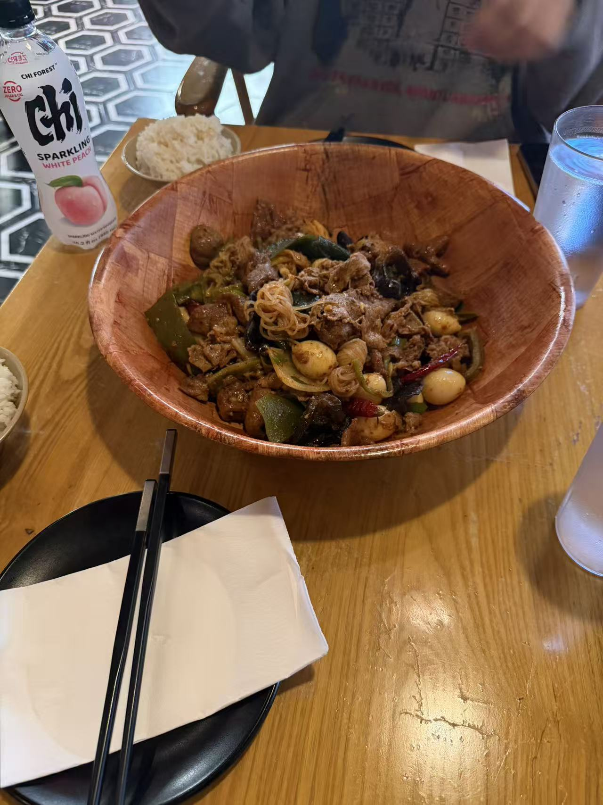

04. A Stop at Laoma Spicy
I stopped at Laoma Spicy to eat before class. A large wooden bowl sits in the middle of the table, with rice and drinks beside it. The bowl is filled with different shapes and colors: green vegetables, red peppers, and tangled noodles.

A pause in the journey.